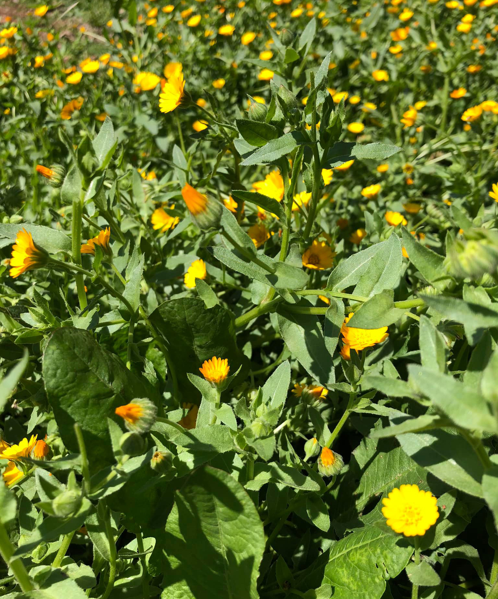

Risotto alla calendula
Preparare dapprima un brodo vegetale, poi fare soffritto con aglio e cipolla, integrare il riso e aggiungere un po’ alla volta mestolate di brodo. Quando mancano 5 minuti a fine cottura aggiungere la calendula (fiori e foglie) che è stata solo sciacquata e scolata. Mantecare il tutto, lascando il riso un po’ umido. Infine a fuoco spento aggiungere parmigiano.
Da ex direttore di enoteca mi permetto di suggerire l’abbinamento con un Frascati il cui sentore è proprio quello di fiori di campo.
Simone